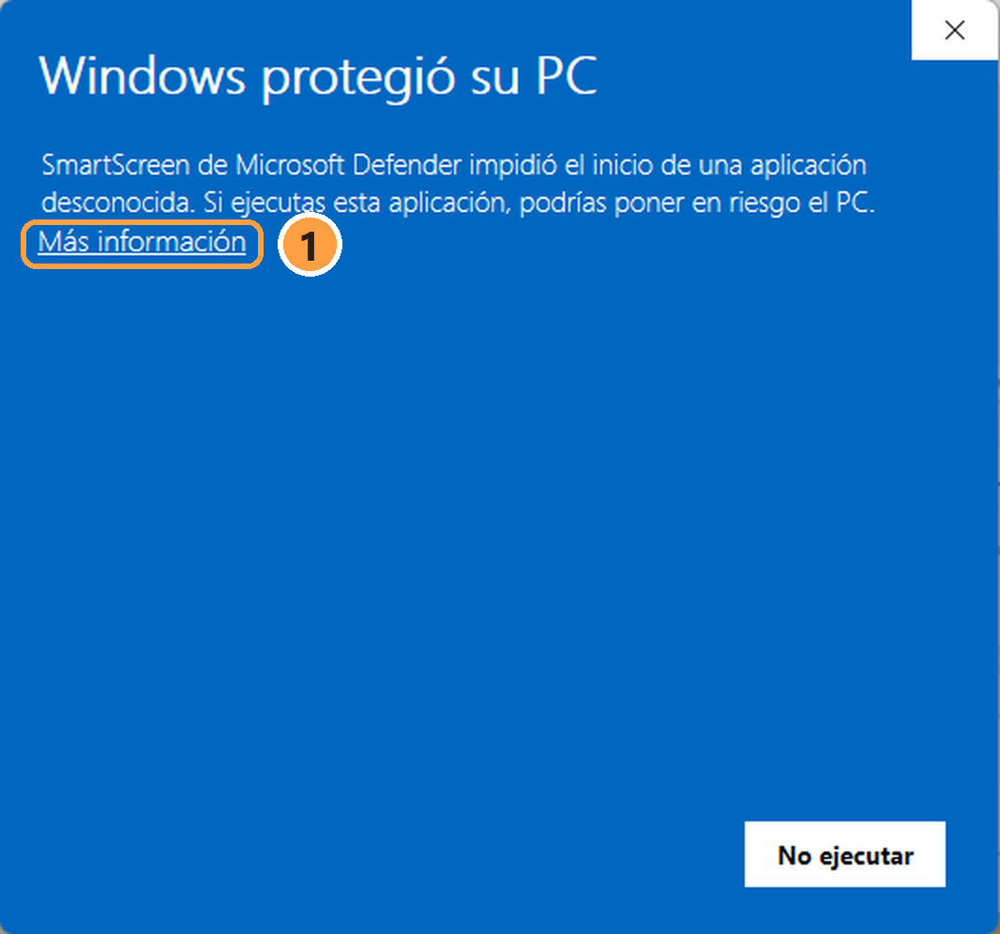

Descargador de vídeos
Descargador de vídeosDescargar un vídeo
Para guardar un vídeo y verlo sin conexión.
- Copia el enlace del vídeo y pulsa Pegar.
- Pulsa Descargar y sigue el progreso en la barra.
- Al terminar suena un aviso: Reproducir vídeo o Abrir carpeta.
Resultado: Título del vídeo.mp4
Gratis para Windows 10 y 11
Pega el enlace de un vídeo que tengas derecho a descargar y obtén un MP4 que se abre en cualquier sitio. Si pegas dos, el programa los descarga y los junta en orden: primero el primero, después el segundo.
Al instalar, Windows mostrará un aviso azul. Es normal: pulsa Más información → Ejecutar de todas formas. Ver con capturas
Estás en un dispositivo que no es Windows. El programa funciona en PC con Windows 10 y 11: envíate el enlace y descárgalo desde allí.
Importante al instalar
Windows muestra «Windows protegió su PC» con cualquier programa que no tenga una firma digital de Microsoft. Esa firma es una licencia de pago que cuesta cientos de euros al año, y este programa es gratuito, así que no la tiene. No significa que tenga virus: el código es abierto y cualquiera puede revisarlo en GitHub.
Para instalarlo solo tienes que pulsar dos cosas, en este orden:
Si al descargarlo tu navegador también avisa, elige «Conservar» en el menú de la descarga.


Cómo funciona
Eliges el modo arriba del todo. Por defecto descarga un vídeo; si marcas «Unir dos vídeos» aparece el segundo enlace.
Para guardar un vídeo y verlo sin conexión.
Resultado: Título del vídeo.mp4
Para juntar dos partes en un único archivo.
Resultado: Título 1 + Título 2.mp4
Enlace 1 · «Viaje parte 1»19 s · 320×240
Enlace 2 · «Viaje parte 2»14 s · 1920×1080
Resultado · un solo MP433 s · 320×240
La unión
Bajo el capó
Una interfaz de tres botones sobre herramientas de referencia, con los detalles que hacen que funcione siempre: reintentos, limpieza y actualizaciones verificadas.
Pegas uno o dos enlaces. El programa comprueba que son válidos antes de empezar.
yt-dlp, una herramienta de código abierto, obtiene el vídeo en H.264 hasta 1080p.
FFmpeg une sin recomprimir o, si hace falta, convierte el segundo al formato del primero.
Se guarda en tu carpeta, se borran los temporales y aparece el aviso de finalizado.
Instalación
Se instala solo para tu usuario, sin pedir permisos de administrador, y se quita como cualquier otra aplicación.
Pulsa «Descargar el instalador» y abre el archivo descargado.
Saldrá «Windows protegió su PC»: pulsa Más información y después Ejecutar de todas formas. Míralo con capturas.
Siguiente → Instalar → Finalizar. Puedes crear un acceso directo en el escritorio.
Ábrelo desde el menú Inicio o el escritorio cuando lo necesites.
Preguntas frecuentes
Si tienes otra duda, puedes abrir una consulta en GitHub.
Sí. Es un proyecto personal sin ánimo de lucro: sin anuncios, sin cuentas, sin donaciones y sin recoger datos. El código es abierto y está en GitHub.
El programa es una herramienta, como un grabador. Es legal usarlo con tus propios vídeos, con contenido de dominio público o con licencia que permita descargarlo (por ejemplo, Creative Commons) y con contenido para el que tengas permiso del titular. Cada persona es responsable de cumplir la ley y las condiciones de cada web. Ver el uso permitido.
Porque el programa no tiene la firma digital de Microsoft, que es una licencia de pago. Es normal en programas gratuitos y no significa que tenga virus: pulsa Más información y después Ejecutar de todas formas. Ver con capturas.
En la carpeta Descargas, dentro de «Descargador de vídeos». Puedes elegir otra con el botón «Cambiar…» y el programa la recuerda.
Las webs de vídeo cambian a menudo. Pulsa «Buscar actualización» en la parte de abajo del programa y reinícialo cuando te lo pida.
No, de momento es solo para Windows 10 y 11.
Configuración → Aplicaciones → Descargador de vídeos → Desinstalar. Los vídeos que hayas descargado no se borran.
Uso responsable
Este programa es una herramienta técnica, como una grabadora. Quien lo usa es responsable de respetar los derechos de autor y las condiciones de cada web. Leer los términos de uso.
Es un proyecto personal y educativo. No se cobra nada, no hay anuncios, no se aceptan donaciones y no se recoge ningún dato. No está afiliado ni respaldado por ninguna plataforma de vídeo.
Compártelo
Envía el enlace directo a quien lo necesite: al abrirlo se descarga el instalador y ve los pasos para instalarlo.